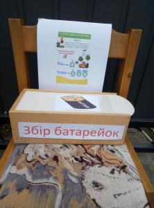
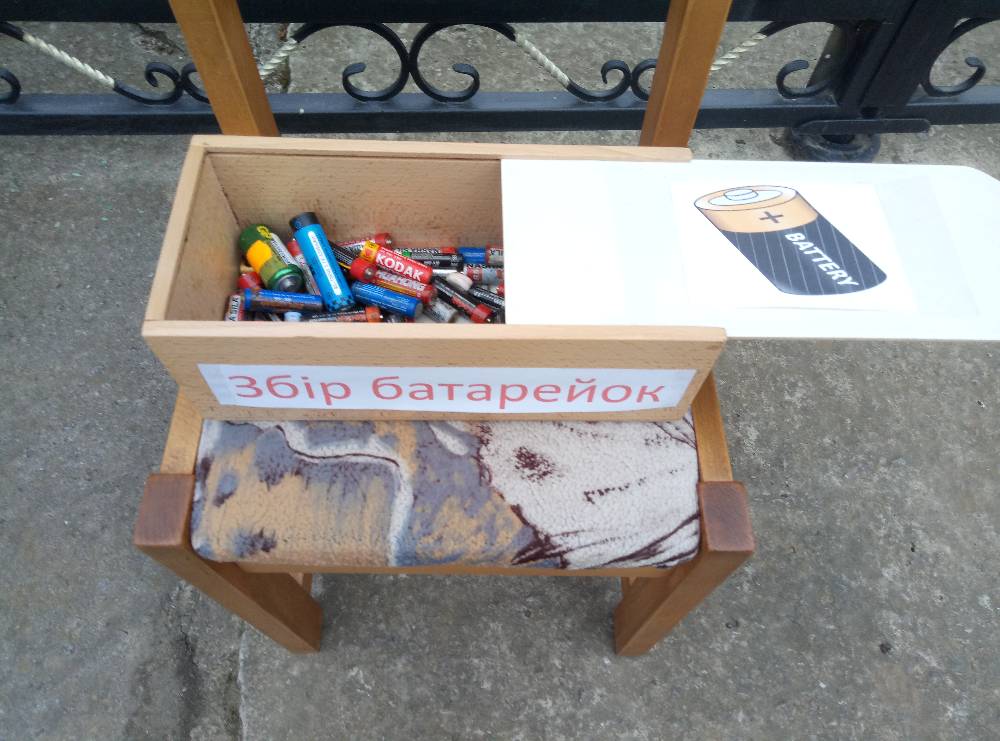

Соціальний експермент
Cоціальний експермент був направлений на перевірку екологіяної свідомість громадян села. Адже ртуть, свинець,літій, кислота та лужні сполуки- ці речовини виділяються із вживаних патарейок та отруююь грунт , річки і підземні води. Провівши Експермент Ми виявили Високий рівень Соціальної активності громадян ми побачили, що багато людей готові захищати довкілля.
До

Після
